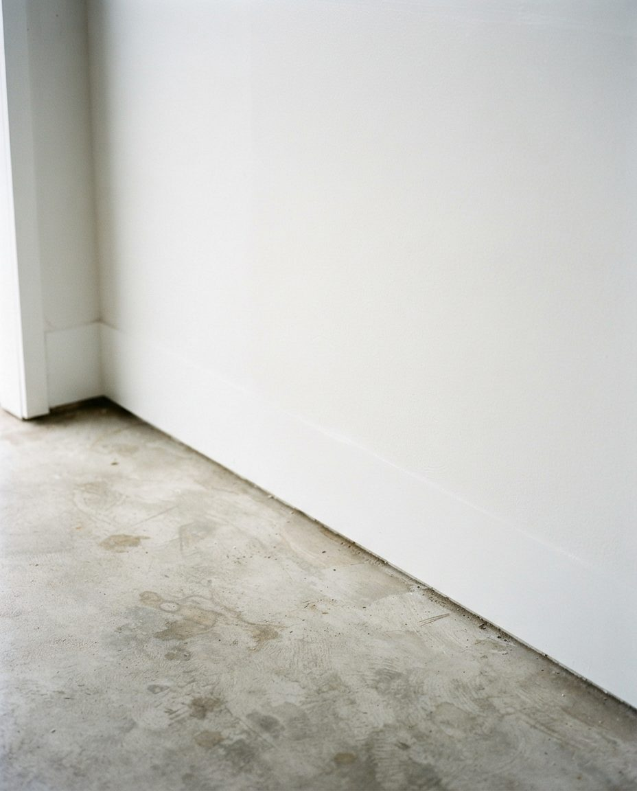

During a renovation the garage becomes the trade entrance, the material store, the cut station and the place the crew eats lunch. When the last invoice is paid, most of what the crew brought leaves with them. What stays is what you bought and didn't use, and the dust they couldn't see from the doorway. That's what this service is for.
The fastest way to a quote is four photos (each wall and the floor) sent to inquiry@garagescape.ca, plus the year the house was built. Or call (587) 804-9266 and describe it.
Read the Contract Before You Pay Twice
Before you hire anyone to clean up after a contractor, check what the contractor already owes you. Renovation contracts in Calgary usually cover hauling away demolition waste, and many promise a "broom clean" finish. Broom clean means swept. It doesn't mean washed, and it rarely covers the surplus material you paid for, which is legally yours and usually ends up in the garage.
Five questions to settle with your contractor before the final payment:
- Is a final clean in scope, and where? "Final clean" often means the rooms that were renovated. The garage they staged in may not be listed.
- Who removes the bin or bags? A half-full disposal bag on the driveway or parking pad is easy to forget about until the company bills for another week.
- Can unopened material go back for credit? Full boxes of tile, flooring and fasteners can sometimes be returned to the supplier. Ask before we donate them.
- Are they coming back? If there's a deficiency list, leave their tools and the matching materials where they are. We'll work around them.
- What did they use, and when was the house built? You'll need the paint colour codes for the touch-up box below, and the build year for the asbestos question.
If the answer to the first question is yes, ask them to do it. We'd rather you didn't pay for the same garage twice. What's left after that is ours.
Built Before 1990? Answer This First
The Government of Alberta's guidance on asbestos in demolition and renovation says buildings from before 1990 carry a higher risk of asbestos in their materials. In houses, the usual suspect is drywall joint compound, the mud over seams and screw heads, along with textured ceilings and vermiculite attic insulation. Alberta Health Services gave Calgary homeowners the same warning about drywall mud after the 2013 flood.
That matters here because a renovation in an older house cuts into original walls, and the dust from those cuts drifts. A lot of it settles in the garage, on top of the stored boxes and along the door tracks. Inner-city houses in Mount Royal, Elbow Park, Britannia, Lakeview, Varsity and the older parts of Altadore are where we ask this question most.
Our line on asbestos
We don't handle asbestos. If your house was built before 1990 and the work opened original walls or ceilings, ask your contractor whether the joint compound was tested. If it wasn't, get a sample tested before anyone sweeps, vacuums or hauls the dust. If it comes back positive, an abatement contractor deals with it first; the City accepts asbestos only at Shepard Landfill, weekdays 8:30 a.m. to 1:30 p.m., wetted and double-bagged in 6-mil polyethylene. Once the test is clear, or the abatement is done, we take over.
For a house built in the 1990s or later (most of Tuscany, Royal Oak, Cranston, Mahogany and the rest of the suburbs), this section doesn't apply and we can start the day you call.
Where Each Leftover Goes in Calgary
Renovation leftovers are heavy, and the City charges by weight. It also charges a mixed load at the highest rate of anything in it, so a single paint-stained offcut in a load of clean drywall can cost more than it's worth. We sort in the garage, before anything goes in the truck. These are the City of Calgary's 2026 residential rates and the Habitat ReStore guidelines as published this fall.
| Leftover | Where it goes | What it costs |
|---|---|---|
| Full sheets of new drywall, usable lumber, unopened flooring, cabinets, doors, sinks, faucets, new light fixtures, hardware, tools | Habitat for Humanity ReStore (free pickup for larger donations) | Free |
| Drywall offcuts and broken pieces, painted or not, with no wood or metal mixed in | City Eco Centre or landfill as a separated drywall load | $90 per tonne |
| Untreated lumber offcuts, pallets, crating | City landfill, recyclable wood | $90 per tonne |
| Metal studs, flashing, pipe, old fixtures and brackets, cut under 1.2 m | City landfill, scrap metal | $113 per tonne |
| Paint, stain, primer, caulk tubes, adhesives, solvents (full, partial or empty cans) | Household hazardous waste drop-off, up to 20 litres per visit, no container over 20 litres | Free |
| Fibreglass insulation scraps | Double-bagged in the black cart for a little; an Eco Centre for more | Cart free; Eco Centre charged by weight |
| Pressure-treated wood, used flooring, old carpet, packaging, foam, bags of grout and thinset | City landfill, garbage | $113 per tonne, or $25 flat under 250 kg |
| Anything suspected of containing asbestos | Testing, then an abatement contractor; Shepard Landfill only | Not ours to move |
A small amount of drywall, cement and grout can go in your black cart as garbage, as long as the lid closes and the cart stays under the City's 60 kg limit. That works for the last bucket of scraps. It doesn't work for a basement's worth of offcuts.
ReStore turns down a fair bit of what renovations leave: paint, stains and chemicals, used flooring, used windows, dirty or rotten lumber, used lighting and used toilets. If the old vanity and the old light fixtures from the bathroom ended up in the garage, they're more likely landfill than donation, and we'll tell you that before we load them. Check the ReStore donation guidelines and the City's landfill rates if you'd like to haul some of it yourself; we're happy to leave the donation pile for you.

Illustration, not a client's garage.The bench after a long project looks like this: offcuts that might be useful, cans that might have paint in them, cords that belong to someone. Each pile on it goes somewhere different, and that sorting is most of the job.
The Touch-Up Box: What to Keep
Clearing everything is a mistake. New walls get scuffed during move-back, tiles crack, and flooring gets gouged by the first chair. A small, labelled touch-up box saves a call to the contractor and a hunt for a discontinued product. We set this aside before anything else leaves:
- One can of each paint colour, lid tapped down, with the room and colour code written on the lid in marker. Partial cans of the same colour get combined. The rest goes to the hazardous waste drop-off.
- A few spare tiles and planks from each batch, since the next box won't match the dye lot.
- Grout and caulk colour names written down. The open bags and tubes go; they harden.
- Spare cabinet hardware, hinges and shelf pins. They're small, cheap to keep and hard to match.
- Manuals and warranty cards for anything installed: fixtures, appliances, the new garage door opener.
In a Calgary garage, that box goes on a shelf off the floor and away from the overhead door. Latex paint ruined by freezing turns lumpy and can't be used, and an attached garage can drop below zero in a cold snap even with the house heated. If you'd rather keep the paint in the basement, we'll carry it down.
Getting the Dust Out
Drywall sanding dust is fine enough to hang in the air and settle on every surface for days, and a garage has more horizontal ledges than people expect: the top of the door opener, the torsion spring, the door panels, the window sills, the light fixtures, the tops of every shelf and every stored box. Sweeping it puts it straight back in the air. The order matters more than the products.
- Top down. Light fixtures, opener, rails and the top edge of the door first, then shelving, then walls. Anything we clean early gets re-dusted if we go floor-first.
- Vacuum before wiping. A HEPA-filter vacuum picks up the loose dust. Wiping first turns it into a paste in the corners and along the door seals.
- Damp-wipe after. Shelves, sills, the door panels inside and out, the house door and the electrical panel cover get a damp cloth, changed often.
- Door tracks and rollers. Gritty dust in the tracks is what makes a door grind. We wipe the tracks; lubricating the rollers and springs we leave to a garage door technician.
- Stored belongings. Bins, bikes and the chest freezer that sat through the reno get wiped down or vacuumed before they go back against a clean wall.
- The floor last. Vacuumed, then washed.
Calgary's dry air works against you here. Dust doesn't stick to damp surfaces the way it does on the coast, so it keeps moving with every door cycle and every chinook gust that comes under the overhead door. One thorough pass beats three quick ones.
What a Crew Leaves on the Floor
When the garage was the cut station, the slab takes the damage. These are the things we look for once the leftovers are out:
- Screws and nails in the expansion joints, under shelving and out on the driveway. We run a magnetic sweeper over the slab and the apron. A drywall screw in a tire is the most common post-reno souvenir.
- Joint compound footprints that look like dust until they're wet, then smear. They need scrubbing, not sweeping.
- Tile saw slurry dried into a grey crust where the wet saw ran.
- Paint drips and roller splatter from cans opened and stirred on the floor.
- Caulk, construction adhesive and spray foam blobs, which come off with a scraper once they've cured.
- Overspray on the inside of the overhead door and the house door if anything was sprayed in the garage.

Illustration, not a client's garage.New paint, old floor. The pale blotches on a slab like this are what dried mud, plaster and boot traffic leave behind, and they don't come off with a broom.
Most of this lifts with a scrub and a wash. Old oil stains, salt rings from last winter and rust prints are a separate job; our garage floor cleaning page explains what can come out of Calgary concrete and when sealing is worth it. If the renovation was the garage itself, and new epoxy or tile is going down, the slab has to be clean of all of the above before the installer starts.
Want the car back in this week?
Call (587) 804-9266 with the build year and a rough idea of what's left. If it's a post-1990 house, we can usually book within the week.
From Final Walkthrough to Car Back Inside
For an ordinary double garage after a basement or kitchen renovation, with no asbestos question, the job runs like this:
| When | What happens | Who's needed |
|---|---|---|
| Before booking | Contractor's clean-up obligations checked, final payment held until they're met, build year confirmed | You |
| First 15 minutes | Walk the garage together: the touch-up box, anything the contractor is coming back for, anything going back to the supplier | You and us |
| Morning | Sort into donation, drywall, wood, metal, hazardous and garbage piles; touch-up box set aside and labelled | Us |
| Midday | Truck loaded by category; donation pile staged for ReStore pickup or delivery | Us |
| Afternoon | Dust removal top to bottom, magnetic sweep, slab scrubbed and washed | Us |
| End of day | Photos sent; stored belongings back on clean shelves; car back in once the floor is dry | You, to park |
A garage that was the main workshop for a whole-house renovation, or one where belongings were stored through months of work, can run into a second day. In winter the floor takes longer to dry, so we plan the wash for earlier in the day.
If the house is going on the market after the reno, the garage is part of the listing photos. Garage cleanout before selling covers how we plan around the photographer and possession day.
What Moves the Quote
We quote after seeing photos or the garage itself, because two renovations of the same size can leave very different garages behind. These are the things that change the number:
- Weight, by category. Drywall and wet-saw tile offcuts are heavy. Separated drywall and clean lumber cost less per tonne at the City than mixed garbage.
- How much can be donated. Material that goes to ReStore doesn't pay a tipping fee.
- Paint volume. Every 20 litres of paint and chemicals is another trip to a hazardous waste drop-off.
- How long the garage was the workshop. Two weeks of sanding dust is a different clean from four months of it.
- What's on the floor. Footprints wash off. Dried paint, adhesive and saw slurry take scraping.
- Access. A detached lane garage in Mount Royal or Altadore with a narrow, rutted lane takes longer to load than an attached front-drive double in the suburbs. Acreage shops in Bearspaw or Springbank mean a longer drive to the landfill.
- The asbestos answer. We start once you have it, and that changes the date more than the price.
For a garage that holds years of the household's own belongings as well as the reno leftovers, the full garage cleanout is the better fit. For a garage with nothing left in it but dust, a garage cleaning is enough. If the renovation was the garage itself and you're planning the storage that goes on the new walls, see garage renovation and garage organization.
We work across Calgary and nearby, including Airdrie, Cochrane, Okotoks and Chestermere. Those towns run their own transfer sites with their own rules, and we sort to match.